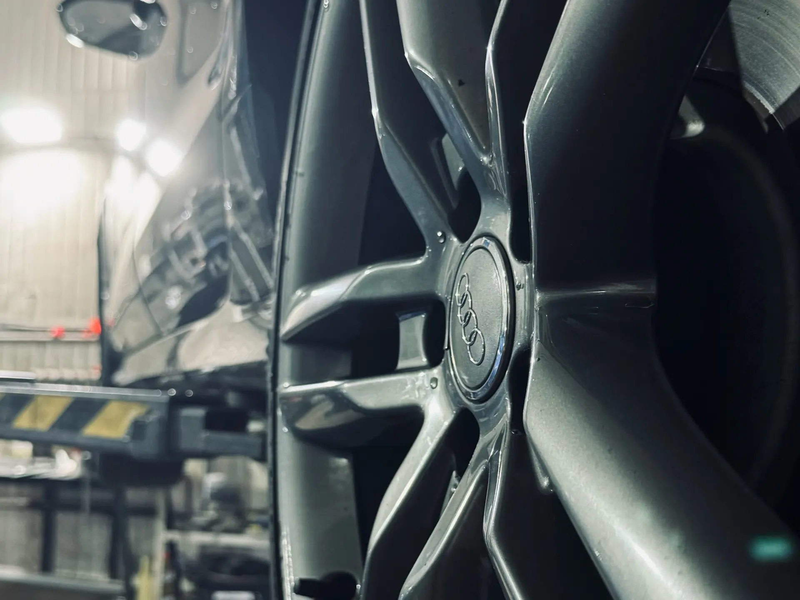
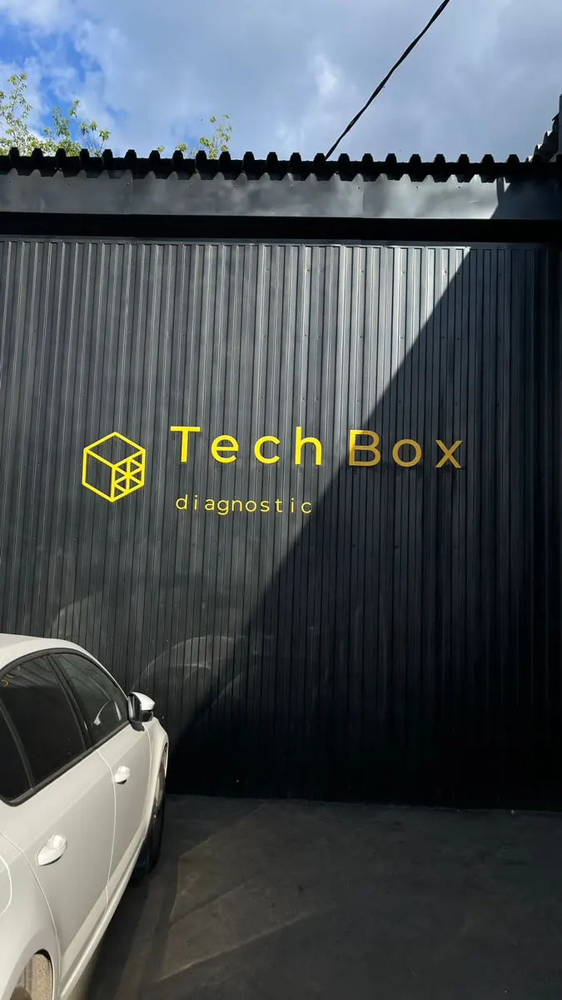
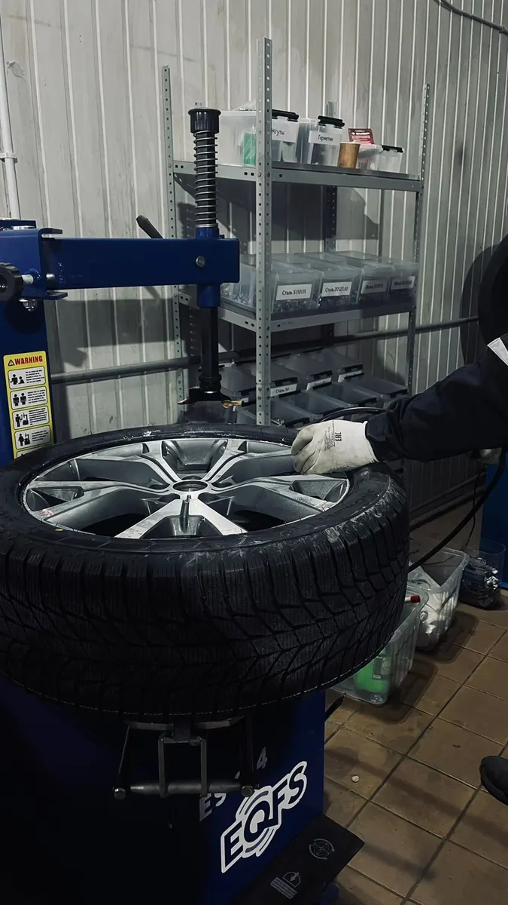
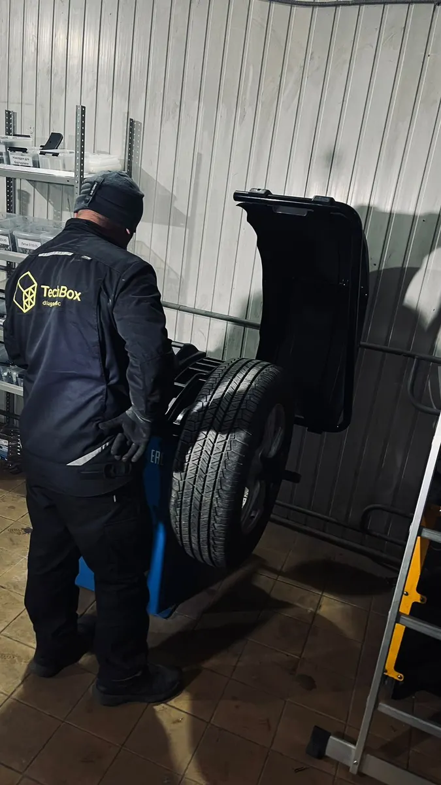

Шиномонтаж и автосервис · Тула · Мосина, 33
Шиномонтаж и автосервис в Туле – запись за минуту
Выберите окно и приезжайте к своему времени на Мосина, 33. Пока работаем – зал ожидания с кофе и Wi-Fi.
- Приезжаете к своему времени
- Зал ожидания с кофе и Wi-Fi
- Каждый день с 10:00 до 19:00

Цены
Цена зависит от машины, радиуса колёс и того, что нужно сделать. Назовём её при записи.
Шиномонтаж
- Сезонная переобувка комплектауточнить
- Балансировкауточнить
- Ремонт проколауточнить
Автосервис
- Замена маслауточнить
- Компьютерная диагностикауточнить
- Тормозная системаколодки, дискиуточнить
- Ходовая частьуточнить
- Автоэлектрикауточнить
При записи на шиномонтаж назовите радиус и тип шин – подтвердим, что всё сделаем за один приезд.
Как проходит
- 01
Записались к своему времени
На сайте, в WhatsApp, Telegram или по телефону.
- 02
Приехали – машину на подъёмник
Мастер-приёмщик скажет, что будем делать.
- 03
Ждёте в зале ожидания
Кофе, Wi-Fi, стол и розетка для ноутбука.
- 04
Забираете машину
Оплата картой, наличными или переводом.



Что обещаем
Принимаем к своему времени
Записались – машину сразу ставят на подъёмник.
Ждать удобно
Зал ожидания с кофе, Wi-Fi, телевизором и местом для работы.
Колёса и ремонт в одном месте
Шиномонтаж, ТО, диагностика, тормоза, ходовая, электрика.
Каждый день
Без выходных, с 10:00 до 19:00.
Отзывы с Яндекс.Карт
«Записывался на замену ступиц.Приняли вовремя и сразу загнали на подъёмник.Никаких "Оставляй ключи,заберёшь когда сделаем",как бывает в других сервисах.Отличный кофе в уютной зоне ожидания.»
Александр Абдюшев · 29 ноября 2024
«Все быстро и качественно. Менеджер Владимир,быстро оформил запись на нужное время и число. Специалист Дмитрий,быстро и качественно переобул мой автомобиль,отбалансировал все колеса и прежде чем приступить к работе,помыл колеса. После работы,упаковал летнюю резину в пакеты и загрузил в багажник. Обслуживанием доволен»
igorevich910uvv · 28 октября 2023
«Хороший автосервис. Запись дня за три. Ремонт без нареканий и быстро. Запчасти предлагают, цена адекватная. Все " больные " места в авто расскажут. Администратор - мастер своего дела. Комната ожидания очень комфортная. Мне всё понравилось. На сегодня для меня это лучший автосервис.»
Наталия · 18 мая
Отзывы с карточки на Яндекс.Картах, без правок.
Частые вопросы
Можно приехать без записи?
Лучше записаться: так вас примут к своему времени. Если срочно – позвоните, скажем, когда сможем принять.
Как записаться на шиномонтаж?
Выберите услугу, день и время на сайте – заявка уйдёт в WhatsApp. Укажите радиус и тип шин.
Чем занимаетесь кроме шиномонтажа?
Замена масла и ТО, компьютерная диагностика, ремонт тормозов, ходовой, двигателя, КПП и автоэлектрики.
Как оплатить?
Картой, наличными или банковским переводом.
Запишитесь к своему времени
- Адрес
- ул. Мосина, 33, Тула
- Часы
- Каждый день 10:00–19:00
- Телефон
- +7 (920) 746-77-74